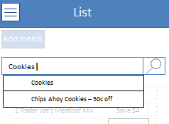

My team and I set out to design an app that made grocery shopping easier. We discovered that many people don't take advantage of coupons because it takes so much time to find coupons relevant to you. See the works-like prototype of the app we designed here (designed for a mobile browser).
User Research
"If my husbands cereal is on sale I'll buy a few boxes but I don't just buy anything thats on sale"
"It's a mom-of-the-house chore, gotta feed the family"
"I don't want to spend half an hour looking for a coupon that's gonna save 50 cents"
A busy mom has no time to search for and clip coupons, but appreciates a good deal. She will occasionally buy discounted items but only if she thinks the item is going to keep her family happy and healthy. She would love to save more on groceries but doesn’t want to spend more effort on this chore.


Personas
Food-on-the-Table Tammy was identified as our main persona because she plans her shopping before going into the store. Dealz for Mealz takes advantage of the effort she puts into making a list to find coupons for items she is already going to buy.
Our secondary persona, Partially Planned Paul, is 25 and shops only for himself. He goes into the store with a vague plan for a meal, but tends to organize the details of his shopping while in the store. He considers price while he shops, but isn’t organized enough to use coupons effectively. Because he doesn't do much planning before getting to the grocery store, he doesn't benefit from finding coupons through Dealz for Mealz
Mapping the shopping experience

Tammy's shopping planning begins at home when she surveys what food she needs and makes a list. She only goes down aisles she knows she needs food from. Paul's shopping planning begins on the way to the store when he thinks about what he wants for dinner. He chooses items as he wanders through the store.
Autonomy as a Need
Through user interviews and paper prototype testing, we discovered that Tammy needs a shopping app that is as unintrusive as possible. She is a "shopping expert" and knows exactly what kind of granola bars her kids will eat. She makes split second choices about items based on her knowlege of her family's tastes that no app can completely predict.
To allow Tammy to be the shopping expert we designed the app to give her as much autonomy as possible. For example, when making a list the app handles item entry by only suggesting specific brands if there are available coupons, and never forces the user to choose a brand or size or flavor so that decisions can be made at the store.
Deals for Meals: Human Factors in Interface Design, Fall 2014
Teammates: Rachel Boy, Ankeet Mutha, Mateusz Okon
This was a team project for a class called Human Factors in Interface Design. The project involved user research, paper prototyping, and creating a works-like looks-like prototype.
Check out our website here and our mobile prototype here.